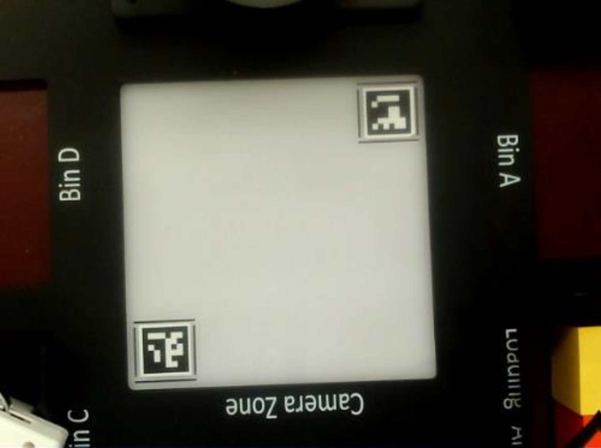
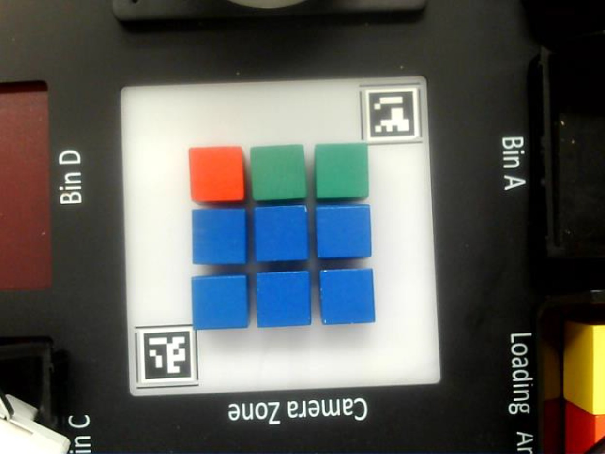
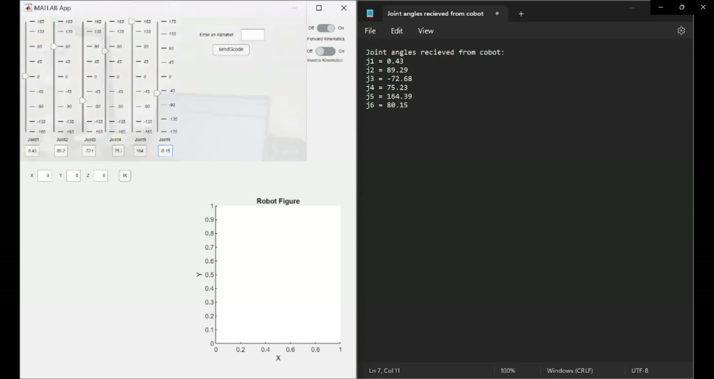
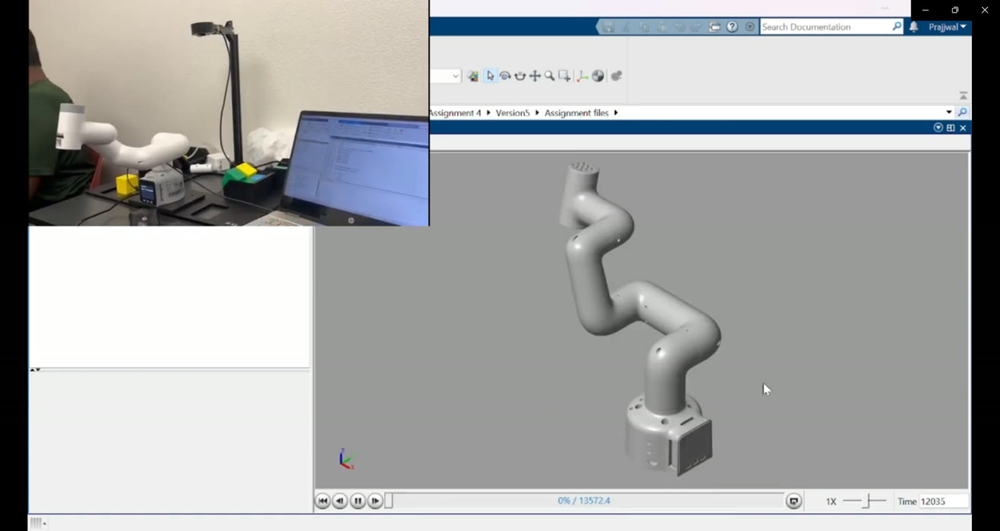
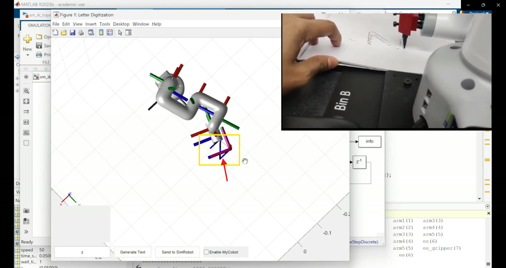

Tic-Tac-Toe Against a Robot That Watches the Board
Two demonstrations on one desktop cobot. First, a tic-tac-toe player: an eye-to-hand camera calibrated with ArUco markers reads the board, color segmentation maps each block to a cell, alpha-beta search picks the strongest reply, and a suction-pump end effector places the move. Second, a MATLAB digital twin: a URDF model and Simulink inverse kinematics write letters in simulation and on the physical arm at the same time, streamed joint-by-joint over serial.
Make a $700 arm see, decide, and play — not just move.
Most desktop-cobot demos replay taught waypoints. The goal here was to close the whole loop on an Elephant Robotics MyCobot 280M5: perception in, decision in the middle, motion out — with a human in the loop as the opponent. Tic-tac-toe is the right size of problem: small enough to solve exactly, rich enough to force real board-state estimation, coordinate mapping, and pick-and-place precision on every turn.
The same platform then got a second act: a digital twin that writes letters. MATLAB generates the trajectory, a URDF model executes it in simulation, and the identical joint angles stream over serial to the physical arm — both pens moving together.
Two ArUco markers turn pixels into millimeters.
The camera sits eye-to-hand above the play area, covering a 3×3 grid flanked by labeled staging bins. Two ArUco markers at opposite corners of the camera zone anchor the calibration: with their known real-world positions, every pixel maps to a board coordinate, and every detected block lands in the correct cell. Color does the rest — the pipeline segments each block by hue, with blue mapped to the human's X and green to the robot's O.


The robot doesn't guess. It searches.
prune when α ≥ β // alpha-beta: skip branches the opponent would never allow
Once the board state is read, an alpha-beta pruned minimax search evaluates the remaining game tree and returns the strongest reply — the robot plays strategically rather than picking the first open cell, and stays competitive even moving second. On a 3×3 board the search is exact: the robot never blunders; the best a human can force is a draw.
The chosen cell then becomes a motion target: the arm's inverse kinematics convert the cell's real-world coordinates into joint angles, the single-head suction pump lifts a green block from staging, and the move lands on the board. Camera stream and robot motion give the player immediate feedback; a terminal prompt is the only interface.
One trajectory, two robots — one of them real.
The second demonstration rebuilds the MyCobot as a URDF rigid-body model in MATLAB with the Robotics System Toolbox. A MATLAB app takes a letter, converts its shape to waypoints, runs a Simulink inverse-kinematics trajectory model, and streams the resulting joint angles over serial — the simulated arm and the physical arm execute the same motion simultaneously, finishing with the letter Z drawn by both.



Watch it play.
What this project proves.
Perception is the hard 80%. The game AI is a textbook algorithm; making a camera reliably tell a blue cube from a green one across lighting changes, and land it in the right cell every time, is where the engineering lived — two ArUco markers bought more robustness than any amount of color tuning. A digital twin is a communication protocol, not a render: the letter-writing demo works because sim and hardware consume the identical joint stream, so what you see in MATLAB is what the serial port actually said. And interaction sells autonomy — the same IK and serial plumbing powers both demos, but the one where a human loses at tic-tac-toe is the one people remember.